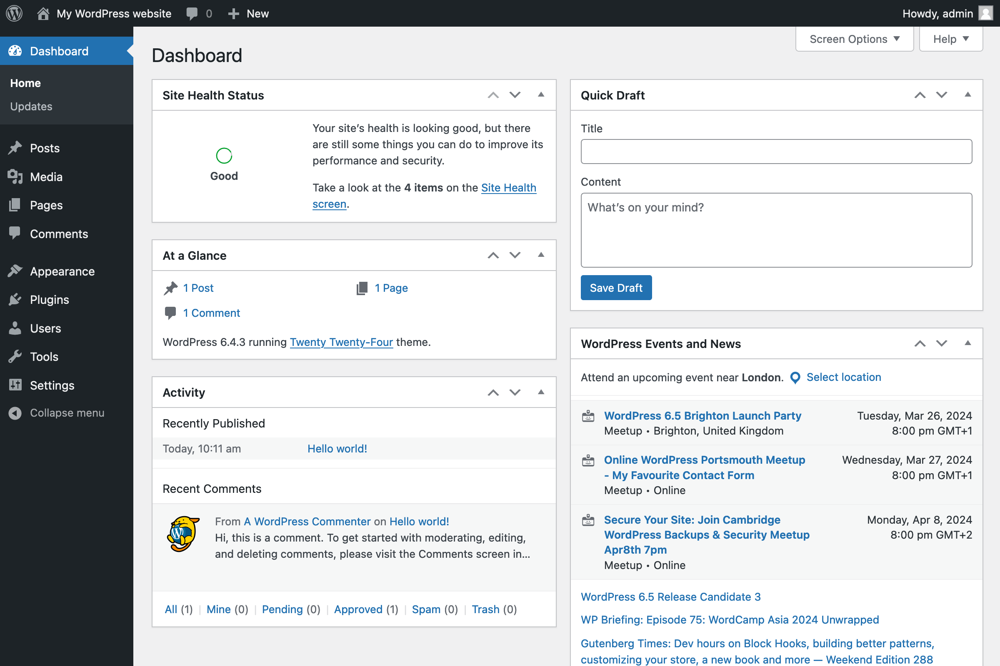

|  |
Dashboard (Tableau de bord) : Permet d'avoir un aperçu du site Posts (article) : gérer les différents article du site Média : gérer tous les fichiers multimédias Page : Similaire aux articles, mais permet de gérer des pages statiques Commentaire : gérer les commentaires des utilisateurs Apparence : permet de personnaliser l'apparence du site Plugins (extensions) : gérer les extensions installé sur le site Users (utilisateurs) : gérer les différents utilisateurs et leurs rôles |